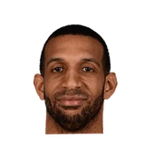
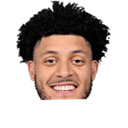

“Before you even get to the [roster] changes, I think you get to the fact that James Harden, Joel Embiid, and other guys did not have a lot of time together. Our core has had two years together – Tyrese [Maxey], Tobias [Harris] – and Joel and Tobias have been together for a number of years, we get that. But to add a guy who has the ball as much as James does, especially with Joel, that’s only going to get better as more time is spent together.”
What Dave Joerger has said about other NBA players and coaches
23 quotes from Dave Joerger about 25 other people around the NBA, newest first. Each one links to its original source.
Best quotes
“(Gay’s) a wonderful human being who’s grown as a player and a leader. He likes it here. We all want to win a little bit more. There’s going to be rumors. Guys in the last year of contracts, guys 6-8 who can do the things he does (on the court).”
“One of the underrated pickups of the year I think will end up being their deal where they brought in Corey Brewer and Alexey Shved,”
What NBA players and coaches have said about Dave Joerger →
Quotes per season
Dave Joerger talks most about
- Dave Joerger on Lionel Hollins3 quotes
 Dave Joerger on Jeff Green2 quotes
Dave Joerger on Jeff Green2 quotes Dave Joerger on Joel Embiid2 quotes
Dave Joerger on Joel Embiid2 quotes Alexey Shved1 quote
Alexey Shved1 quote
Brandan Wright1 quote Buddy Hield1 quote
Buddy Hield1 quote Corey Brewer1 quote
Corey Brewer1 quote De'Aaron Fox1 quote
De'Aaron Fox1 quote James Harden1 quote
James Harden1 quote Jerryd Bayless1 quote
Jerryd Bayless1 quote
Justin Jackson1 quote Luka Doncic1 quote
Luka Doncic1 quote
2022-23
2 quotesDave Joerger on @Joel Embiid:
“I’m very partial, but I think he should’ve won [MVP] the last two years. I’ve coached against him as well, and he’s a problem. He’s a big problem.”
“Before you even get to the [roster] changes, I think you get to the fact that James Harden, Joel Embiid, and other guys did not have a lot of time together. Our core has had two years together – Tyrese [Maxey], Tobias [Harris] – and Joel and Tobias have been together for a number of years, we get that. But to add a guy who has the ball as much as James does, especially with Joel, that’s only going to get better as more time is spent together.”
2018-19
4 quotesJay King:Dave Joerger on Kyrie sitting:
“Last time it happened Terry Rozier put 34 on us last year.”
Jason Jones:Joerger on his late exchange w/ Hield Thursday:
“I was a little animated at a time when the cameras are really on you...that stuff shouldn’t happen out in front. Sometimes you can’t coach off camera.”
Kings coachDave Joerger just told the @GrantNapearshow
“Troy Williams “was good for us, but I think Justin (Jackson) has won that battle”
Dave Joerger on Justin Jackson, Troy WilliamsTwitter @JandersonSacBee
Kings coachDave Joerger on Luka Doncic:
“Perhaps there was an idea that there was a ceiling on him. I don't see it, unfortunately for us. But he's great for them and he's great for our league.”
2017-18
1 quoteKings coachDave Joerger on rookie De'Aaron Fox, 19:
“He's one of the higher IQ guys on our team,so I've got to catch everybody up to him.”
2016-17
4 quotesAccording to head coach Dave Joerger, he’s seen enough from the Sacramento Kings’ shooting guards and he’s going to give the rookie first-round pick an opportunity.
“I think that it’s time for Malachi to get into the rotation, especially with Rudy (Gay) out,”
Dave Joerger on Malachi RichardsonCSNBayArea.com
Joerger on Duncan:
“He played with a pure heart, very classy. He was good hearted, but he'd cut your heart out as a competitor.”
“(Gay’s) a wonderful human being who’s grown as a player and a leader. He likes it here. We all want to win a little bit more. There’s going to be rumors. Guys in the last year of contracts, guys 6-8 who can do the things he does (on the court).”
“Generally, we were playing with two bigs in Memphis with Marc (Gasol) and Zach (Randolph), so we’re trying to do some things there. I anticipate us playing a lot more small ball this year.”
2015-16
4 quotesCoachDave Joerger on losing Wright:
“It’s going to be tough with out him. I feel terrible for him because he worked his tail off to get back. It stinks for us. It’s awful for us for the rest of the year.”
Dave Joerger on Brandan WrightTwitter @CAGrizBeat
Ronald Tillery:Dave Joerger on Lionel Hollins:
“He’s a fighter. He’ll go out and do it the way he thinks is best to do it & he won’t apologize for it. It works. He's a super human being & a tremendous coach.”
Clay Bailey:Dave Joerger:
“We care about (Hollins) deeply & tried to reach out to him. Commenting on the situation, I don't know what all was involved there.”
Rowan Kavner:Joerger on Barnes:
“The guys that you disliked playing against the most are the guys you know will be the best kind of teammates.”
2014-15
4 quotesMike Tokito:Dave Joerger on Mike Conley:
“The surgery went well, there's not a lot of swelling. ... We want him back, and we want to win this one for Mike.”
Joerger said, cryptically, on Thursday:
“Jeff Green is the least of our problems. Most people on the inside know what it is. And it's not Jeff Green.”
Joerger isn’t planning to make any changes despite criticism and statistical analysis that point toward there being a problem with Green starting.
“Jeff Green is the least of our problems. Most people on the inside know what it is,”
“One of the underrated pickups of the year I think will end up being their deal where they brought in Corey Brewer and Alexey Shved,”
2013-14
3 quotes“I want to thank Robert Pera for believing in me. I look forward to building on the success we experienced this year with our core group of players that I have worked closely with over the past seven years as we work towards our ultimate goal of winning a world championship. I am 100 percent committed to leading the Grizzlies and I could not be more proud to call Memphis home.”
But for the team to take the next step, Joerger believes the growth will need to come from the team’s younger role players.
“For us to grow from within Jerryd Bayless needs to have a nice season for us,”
“Quincy Pondexter needs to have a nice season for us. Those guys need to make shots from the perimeter and for that to happen they’re going to have to be on the floor and be consistent.”
Dave Joerger on Quincy PondexterHoopsWorld
2012-13
1 quoteGeoff Calkins:Joerger on succeeding Hollins:
“This is Lionel's job. When it wasn't Lionel's job, then I'm interested.”